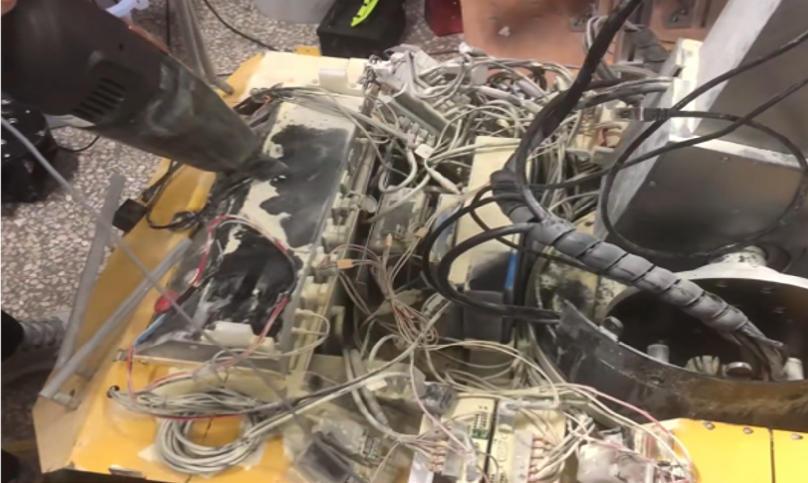

I'm a Postdoctoral Research Scientist at the Mortimer B. Zuckerman Mind Brain Behavior Institute,
Columbia University, working with Prof. Nikolaus Kriegeskorte.
I'm fortunate to receive mentorship from Prof. Yukiyasu Kamitani during my Ph.D..
I received M.S. from Mechanical and Aerospace Engineering at UC
San Diego, advised by Prof.
Xiaolong
Wang. Prior to joining UCSD, I worked at Lab of Flexible
Sensors and Intelligent Interaction with Prof.Geng Yang at Zhejiang University. I've
also had great experiences working at
NVIDIA Seattle Robotics Lab.
My research interests lie in Robot Learning, Dexterous Manipulation, Multi-Modal Perception. My
research goal is to develop a robust robotic
system that can function similarly to humans and possess a deep understanding of its surrounding
environment - not just visually but also through touch and other physical cues. If you have any questions about tactile sensors or potential collaborations, please schedule an appointment with me: Schedule a Meeting.
I am always interested in mentoring highly-motivated undergrads/masters in ME/ECE/CS. If you are at
Columbia (preferred) and want to discuss project ideas/research
opportunities, please feel free to shoot
me an email.
I focus on
Robot Learning
and aim to significantly expand robots' perception and physical interaction
capabilities, particularly through the following three directions:
Multi-Modal Perception: Development of tactile sensing hardware and
multi-modal learning systems, especially for visuo-tactile sensing.
Dexterous Manipulation: Learning with multi-finger hands to equip
robots with human-level dexterity. Expertise in
robot control and teleoperation is highly desirable.
Learning with Dynamic Tasks: Addressing challenging tasks that
require dynamic robot motions such as throwing, catching, and contact-rich interactions.
3D-ViTac: Learning Fine-Grained Manipulation with Visuo-Tactile Sensing Binghao Huang, Yixuan Wang, Xinyi Yang, Yiyue Luo, Yunzhu Li
Conference on Robot Learning (CoRL), 2024 [project][paper][Hardware Tutorial][video]
RoboEXP: Action-Conditioned Scene Graph via Interactive Exploration for Robotic
Manipulation
Hanxiao Jiang, Binghao Huang, Ruihai Wu, Zhuoran Li, Shubham Garg, Hooshang Nayyeri, Shenlong Wang,
Yunzhu Li
Conference on Robot Learning (CoRL), 2024 Best Paper Nomination at ICRA 2024 Workshop on
Vision-Language Models for Manipulation [Link] [project][paper][code]
Sim2Real Manipulation on Unknown Objects with Tactile-based Reinforcement Learning
Entong Su, Chengzhe Jia, Yuzhe Qin, Wenxuan Zhou, Annabella Macaluso, Binghao Huang, Xiaolong
Wang
International Conference on Robotics and Automation (ICRA) 2024 [project][paper]
Dynamic Handover: Throw and Catch with Bimanual Hands Binghao Huang*, Yuanpei Chen*, Tianyu Wang, Yuzhe Qin, Yaodong Yang, Nikolay Atanasov,
Xiaolong Wang. Conference on Robot Learning (CoRL), 2023 [webpage][arxiv][code]
Robot Synesthesia: In-Hand Manipulation with Visuotactile Sensing
Ying Yuan*, Haichuan Che*, Yuzhe Qin*, Binghao Huang, Zhao-Heng Yin, Kang-Won Lee, Yi Wu,
Soo-Chul Lim, Xiaolong Wang International Conference on Robotics and Automation (ICRA), 2024 [webpage][arxiv][code]
Rotating without Seeing: Towards In-hand Dexterity through Touch
Zhao-Heng Yin*, Binghao Huang*, Yuzhe Qin, Qifeng Chen, Xiaolong Wang. Robotics: Science and Systems (RSS), 2023 [webpage][paper][code]
AnyTeleop: A General Vision-Based Dexterous Robot Arm-Hand Teleoperation System
Yuzhe Qin, Wei Yang, Binghao Huang, Karl Van Wyk, Hao Su, Xiaolong Wang,
Yu-Wei Chao, Dietor Fox Robotics: Science and Systems (RSS), 2023 [webpage][paper]
DexPoint: Generalizable Point Cloud Reinforcement Learning for Sim-to-Real Dexterous
Manipulation
Yuzhe Qin*, Binghao Huang*, Zhao-Heng Yin, Hao Su, Xiaolong Wang. Conference on Robot Learning (CoRL), 2022 [webpage][paper][code]
Learning Continuous Grasping Function with a Dexterous Hand from Human
Demonstrations
Jianglong Ye*, Jiashun Wang*, Binghao
Huang, Yuzhe Qin, Xiaolong Wang. IEEE Robotics and Automation Letters(RA-L), 2023 [webpage][paper][video]
Robot Systems
Tactile Bimanual Manipulation System
If you want to know more about how tactile sensors can benefit your robot system, feel free to contact
me. We propose 3D-ViTac, a multi-modal sensing and learning system for dexterous bimanual
manipulation. This system features flexible, scalable, low-cost tactile sensors, each finger equipped with a
16 × 16 sensor
array.
[Hardware Tutorial][project][paper]
Tactile Hardware
Flexible Grasping
React under Occlusion
Tactile Dexterous Hand System
We propose Touch Dexterity, a new dexterous manipulation system to perform in-hand object
rotation with only touch
sensing. On the left, we show our hardware setup with 16 FSR sensors attached to an Allegro
hand.
Hardware Setup
In-hand Object Rotation
Contact Signal Simulation
Bimanual Hand Robot System
We propose Dynamic Handover, a new bimanual dexterous hands system designed for throwing and
catching tasks. The system consists of two Allegro Hands, each individually attached to a separate XArm
robot,
arranged in a facing configuration.
Hardware Setup
Throwing and Catching in Real
System in Simulation
Humanoid Robot with Peception and Navigation
I have experience in developing a ROS-based control pipeline for a navigation system that utilizes 2D
Lidar and depth cameras. Additionally, I have designed a vision-based tracking method that leverages
object detection algorithms to enable obstacle avoidance for mobile robots.
[paper][code]
In addition to my research in Robotics, I am also a content creator with a strong passion for sharing my
knowledge of the field. I currently manage a Robotics Video Channel with over 63,000 followers and 4
million views in total. One of my Most Popular Video, which discusses robots combined
with brain-computer interfaces, has garnered over 1.84 million views and is widely recognized
within the
field.
Motor Augmentation
Atlas&MPC
Soft Robot
Sad Stories with Robots
I possess practical experience in both building and repairing a wide range of robotic equipment. In doing
so, I have encountered and addressed various dangerous situations, including instances where a robot lost
control, a robot motor caught on fire, and a gearbox became damaged.
Mobile Robot on Fire

Mobile Robot Repairing
Allegro Hand Repairing
NEXTEV Formula Student Electric China (FSEC),Sep 2017
In, Nextev Formula Student Electric China (FSEC) team, I took on the role of designing
the steering system for our formula car. The patent, titled "A Kind of University Student's Equation
Motorcycle
Race Steering, Manufacture and Its Installation Method," was granted under the number 2017105998790.1.
[Google Patent],
[pdf]